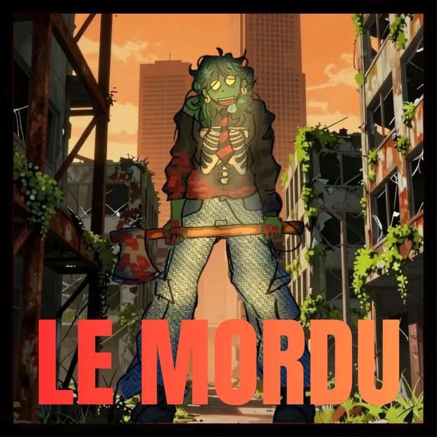
Contaminés
Mordu original
À partir de la deuxième nuit, tu choisis avec les contaminés un survivant à contaminer. La première nuit, tu observes.
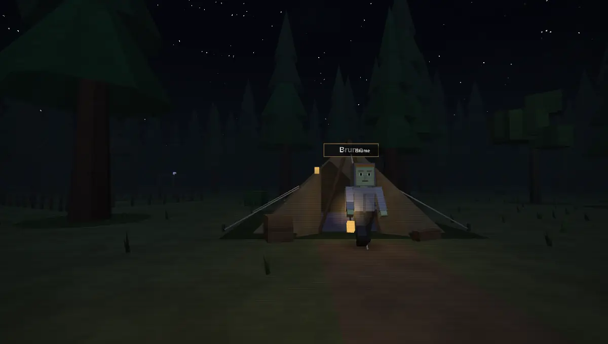
Un survivant parmi vous a été mordu. Chaque nuit, la contamination gagne une maison de plus. Trouvez-le avant qu’il ne reste plus personne pour voter.
Dernier Signal est un jeu de déduction dans la lignée du Loup-garou. Chaque joueur reçoit une carte en secret. Le Mordu original se cache parmi les survivants et contamine l’un d’eux chaque nuit. Le jour, tout le monde débat, puis vote pour éliminer un suspect.
dès que le Mordu original est éliminé par un vote de jour.
quand il ne reste plus assez de survivants pour les arrêter.
Le jeu affiche un récapitulatif à la fin : qui était qui, qui a été contaminé quand, et chaque action de chaque nuit.
Le canal public se coupe. Chacun utilise son pouvoir en secret. Dès la deuxième nuit, la tanière désigne qui contaminer.
Le jeu annonce ce qui s’est passé : éliminés, indices, contaminations repoussées. Chacun reçoit ses résultats en privé.
Les survivants discutent, accusent, se défendent. Quand tout le monde est prêt, le vote s’ouvre.
Vote secret. Le joueur le plus désigné est éliminé et sa carte révélée. En cas d’égalité, personne ne part.
Les rôles spéciaux entrent en jeu selon le nombre de joueurs. L’hôte peut en retirer ou en ajouter avant de lancer la partie.

À partir de la deuxième nuit, tu choisis avec les contaminés un survivant à contaminer. La première nuit, tu observes.
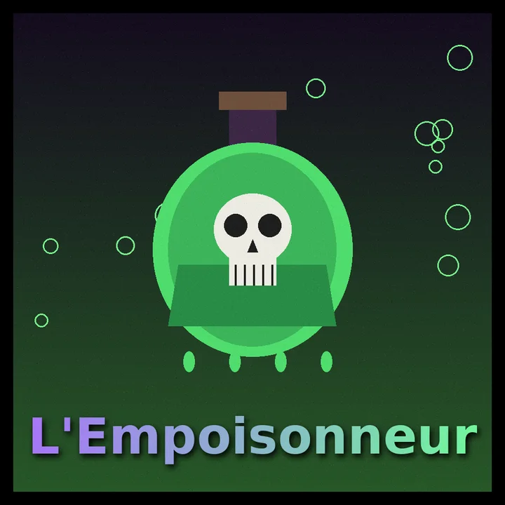
Tu reçois ta carte avant tout le monde et tu dois empoisonner un joueur : il reçoit le faux rôle de ton choix et le croira jusqu’à la fin. Ses pouvoirs échoueront toujours, avec un prétexte.
Chaque nuit, tu examines un joueur et découvres son rôle exact.
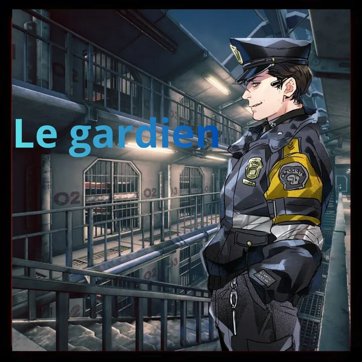
Chaque nuit, tu protèges un joueur contre la contamination.
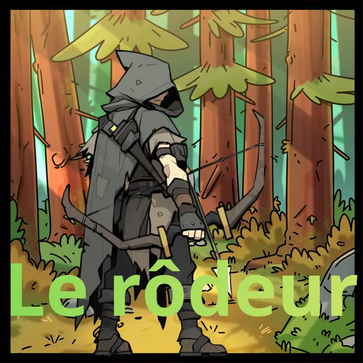
Une seule fois par partie, la nuit, tu suis un joueur : tu sauras s’il a activé un pouvoir cette nuit-là, sans connaître son rôle.
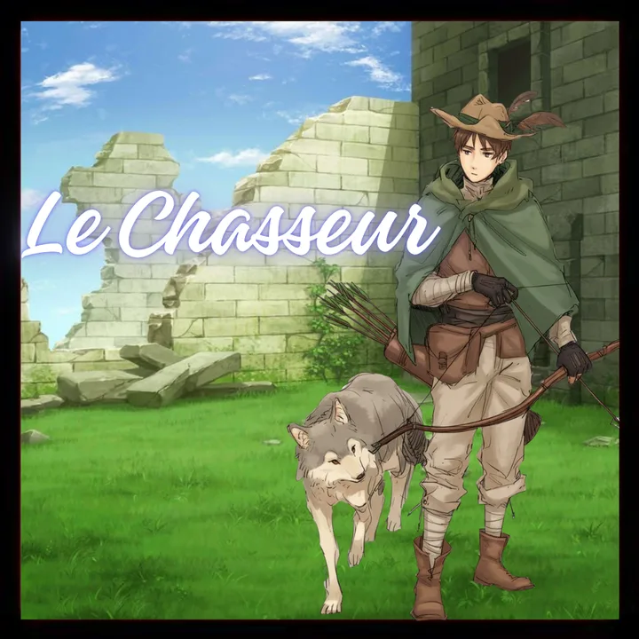
Une seule fois par partie, la nuit, tu traques un joueur. S’il est contaminé, il est abattu à l’aube. Sinon, ta flèche manque sa cible.
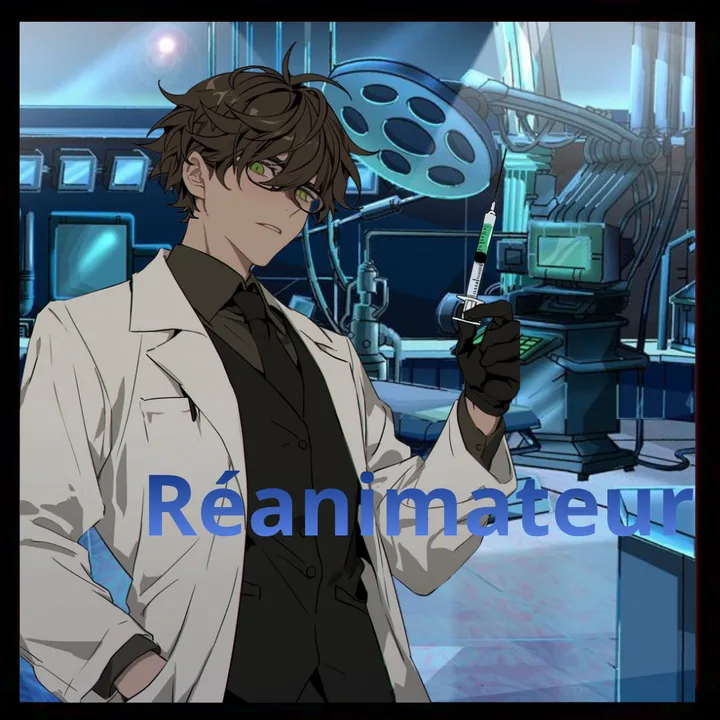
Une seule fois par partie, la nuit, tu ramènes un joueur éliminé. Le lendemain, il prononce une phrase-indice, puis retourne parmi les morts.
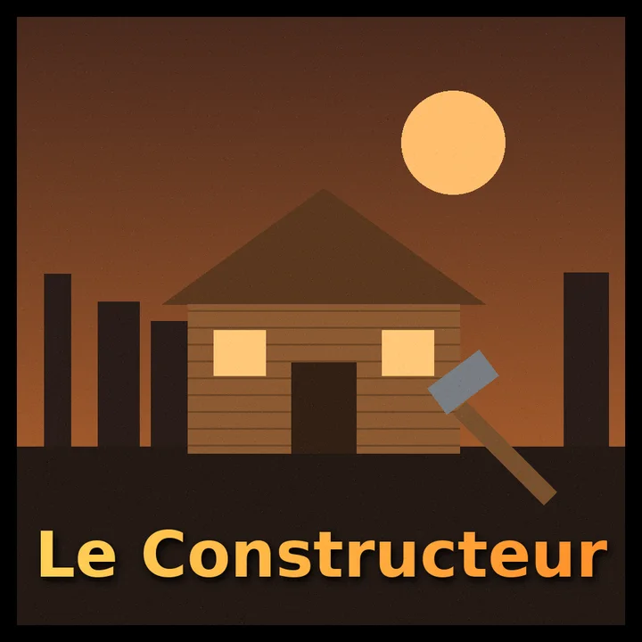
Une seule fois par partie, la nuit de ton choix, tu construis une seconde maison. Si la tanière vient ensuite te contaminer, tu dors ailleurs : la contamination échoue et tu reçois un indice sur le Mordu original.
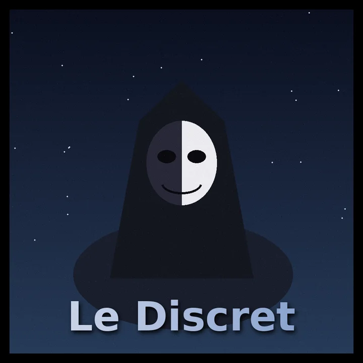
Chaque nuit, tu imites le pouvoir de n’importe quel rôle, pour cette nuit seulement, même celui du Mordu original. Au début, le jeu dévoile à tous un rôle : c’est ta couverture, et tu dois te faire passer pour lui.
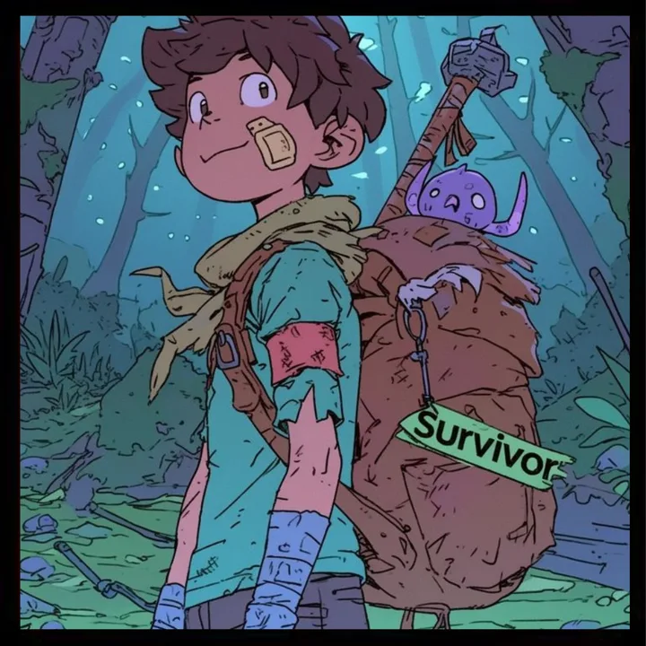
Aucun pouvoir spécial. Ta voix, ton instinct et ton vote comptent.
Ta carte, une tablette, le canal de discussion. Rapide et lisible, idéal sur téléphone.
Chacun a son logement et son personnage. La nuit, tu peux rester chez toi ou sortir agir à la porte de ta cible, au risque d’être vu.
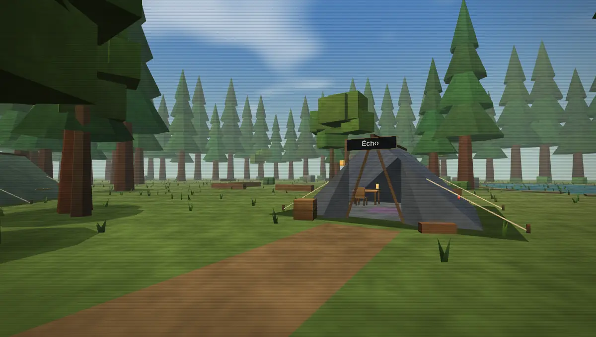
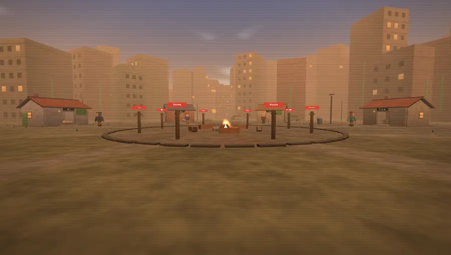
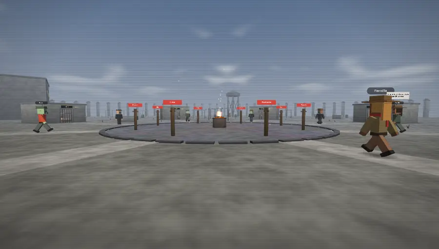
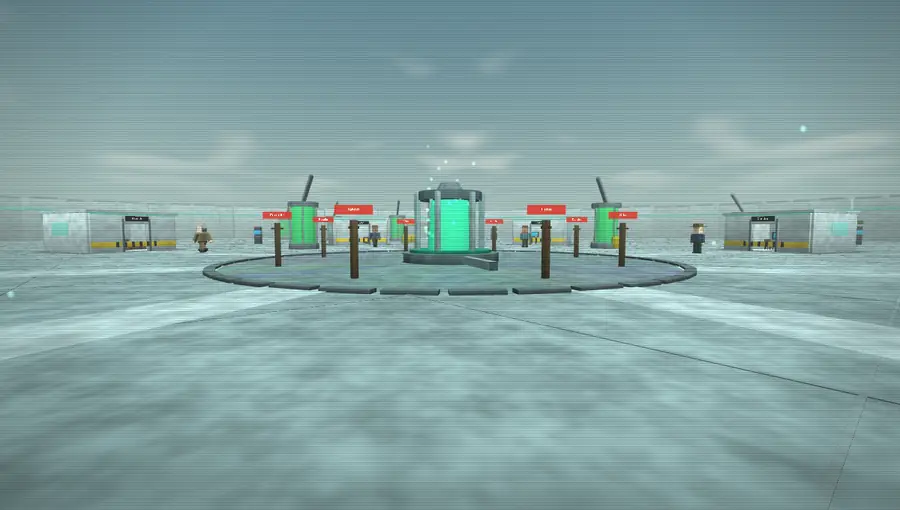
Pas encore assez de joueurs ? Lance la partie d’essai contre des bots.
Sur ordinateur : icône d’installation dans la barre d’adresse (Chrome, Edge). Sur Android : menu ⋮ puis « Installer l’application ». Sur iPhone : Partager puis « Sur l’écran d’accueil ».
Hors connexion, la partie d’essai contre des bots marche toujours.
En cochant « Je suis maître du jeu », l’hôte voit tous les rôles, contrôle les phases et le chrono, peut corriger une action ou un vote, et forcer la fin. Les joueurs n’y ont jamais accès.